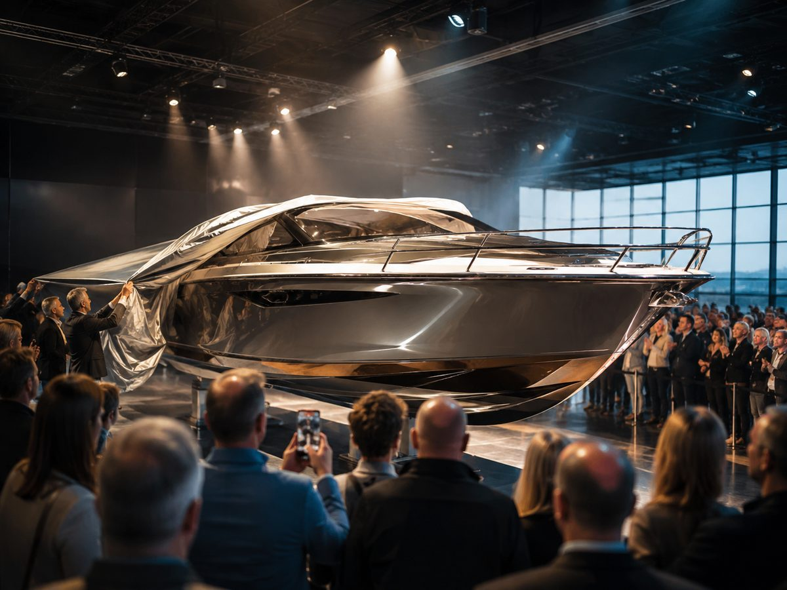
Premiärer
Det nya visas först
Lanseringar, pressmoment och en egen premiärkalender gör mässan aktuell långt före öppningsdagen.
Se publikformatet →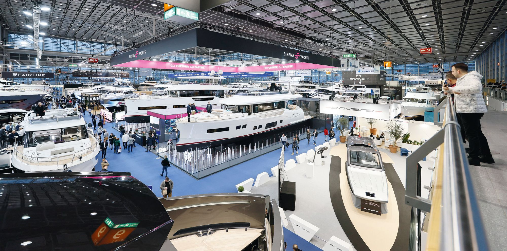
Tio dagar av båtar, premiärer, vattensport, teknik, människor och affärer. Sjömässan samlar publiken och den professionella marina marknaden på Elmia 2028.
Publiken kommer för båtarna, upplevelserna och drömmen. Branschen kommer för affärerna, innovationen och kontakterna. Tillsammans gör de veckan på Elmia till årets viktigaste för svenskt sjöliv.
Motorbåt, segel, fiske, paddel, dyk, charter och vattensport – med premiärer, prov-på och scenprogram varje dag.
Utforska Båtmässan →Varv, marinor, teknik, energi, handel och finansiering – byggt för kvalificerade möten som leder någonstans.
Utforska Marine Business →Sjömässan kombinerar produktupplevelse, professionella relationer och den tekniska omställningen i en sammanhängande publikresa.

Lanseringar, pressmoment och en egen premiärkalender gör mässan aktuell långt före öppningsdagen.
Se publikformatet →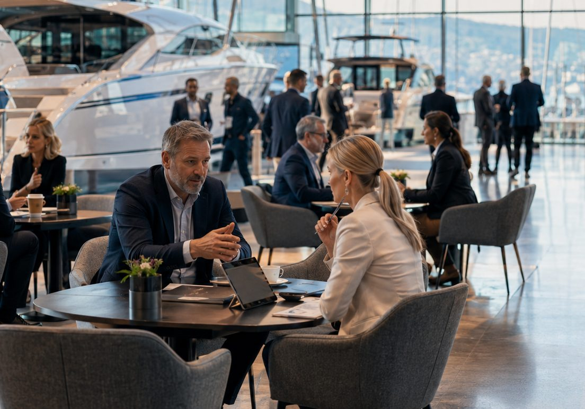
Matchmaking, förbokade samtal och fokuserade affärsspår ger utställaren resultat som går att mäta.
Se affärsplattformen →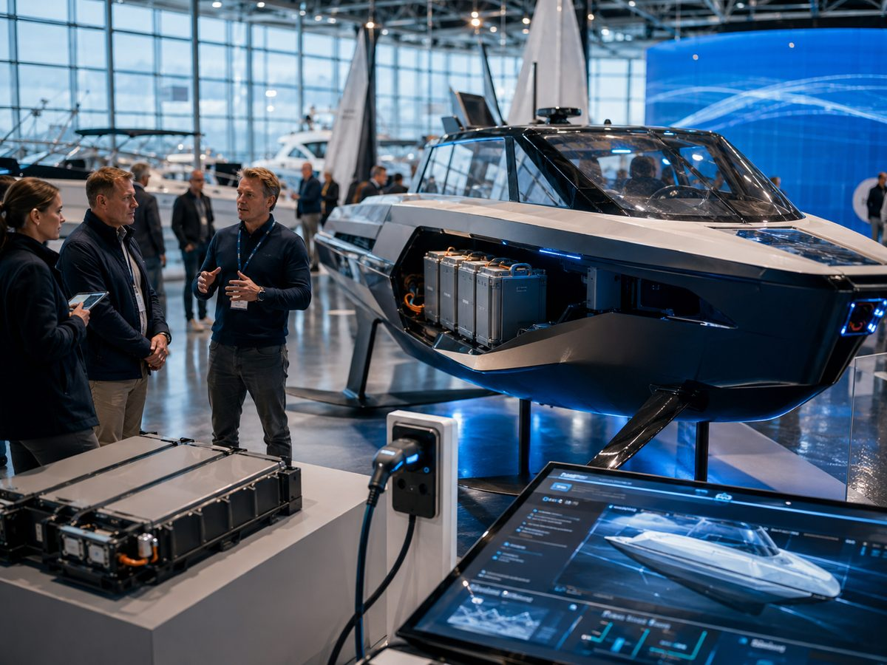
El, hybrid, AI, hydrofoil, nya material och smarta system samlas i ett eget innovationsspår.
Se innovationsspåret →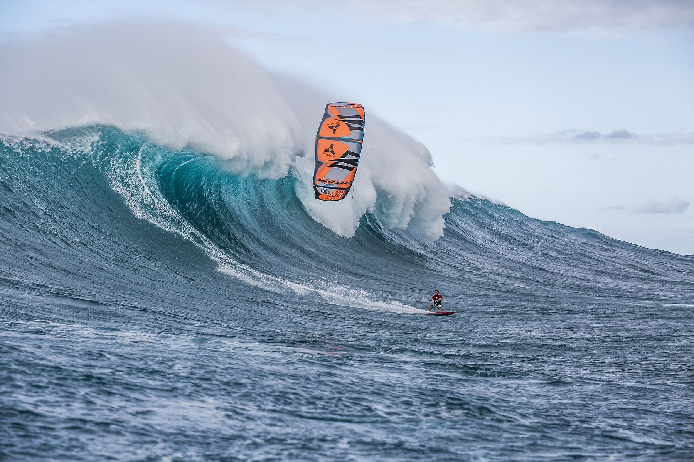
Surf & Foil Arena. Paddelflod. Dyktorn. Beach World. Premiärer. Båt 2028. Livescener. Kvällsöppet. Sjömässan byggs som en destination – inte som en korridor av montrar.
Helgerna levererar räckvidd. Vardagarna får egna målgrupper, innehåll och kommersiella skäl att komma.
Stora lanseringar, tävlingar och familjens starkaste dagar.
Branschmorgon, matchmaking och affärer före publiköppning.
Temadagar, kvällsbiljett och scenprogram som lockar efter jobbet.
Beach World, liveformat, barer och en tydlig kvällsfinal.
För utställare, partners, organisationer och varumärken som vill forma Sveriges nya nationella sjö- och båtmässa.
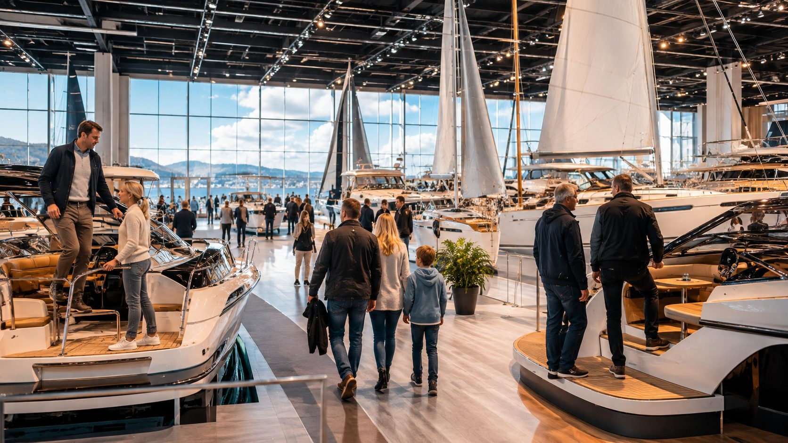
Båtarna du vill kliva ombord på. Nyheterna du vill se först. Kunskapen du inte hittar i en webbshop. Och tio dagar fulla av vatten, fart och inspiration.
Motorbåtar, segelbåtar, familjebåtar, premium, motorer, elektronik, tillbehör, fiske, paddel, dyk, charter och vattensport – samlat under ett tak.
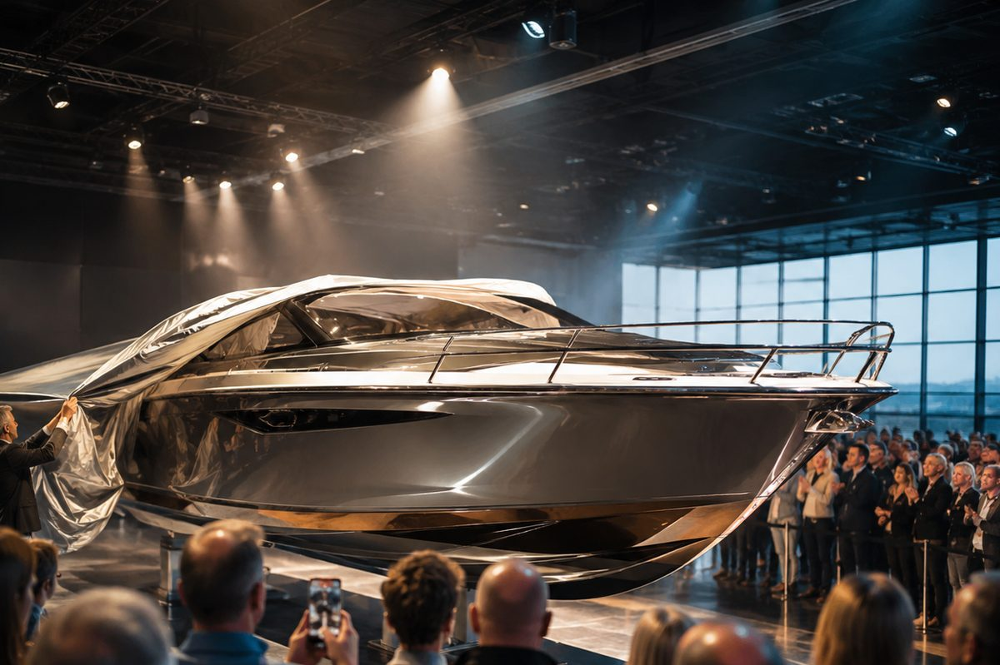
Nya båtar och ny teknik presenteras på mässan – med dagliga lanseringar och en egen premiärkalender.
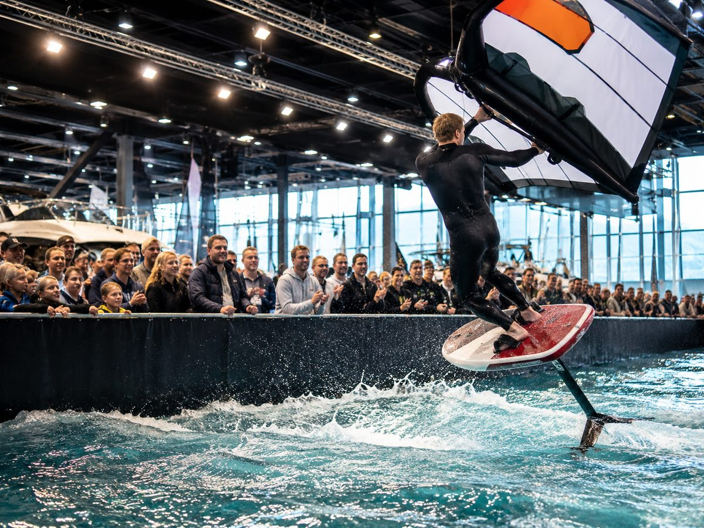
Tävlingar, uppvisningar och prova-på i en stor inomhusarena. Det händer något varje dag.
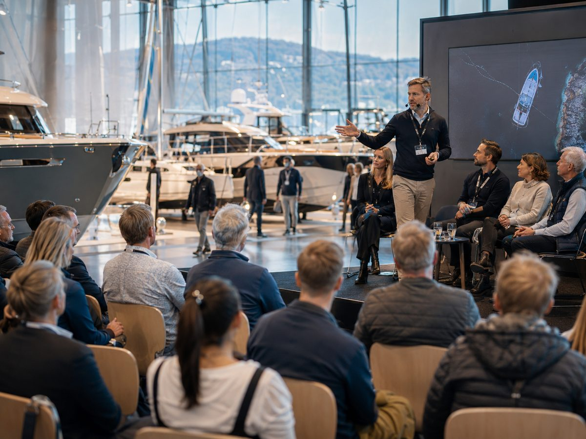
Segling, sjövett, navigation, långfärd, fiske, teknik och inspiration från människor som faktiskt lever båtliv.
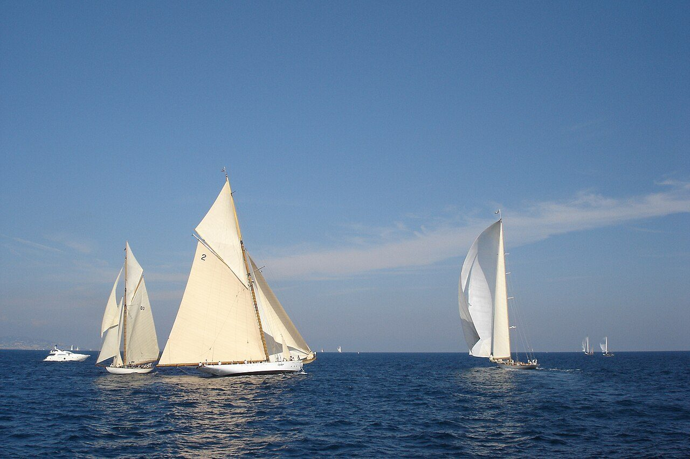
Motorbåt. Segelbåt. Familjebåt. Innovation. Priserna delas ut kvällen före öppning och vinnarna visas på mässan.
Publikdagar, temadagar och kvällsformat gör att mässan fungerar både för familjen, specialisten och den nyfikne förstagångsbesökaren.
Från familjebåt till premium och prestanda.
Båtar, utrustning, rutter och människor som gjort resan.
Foil, surf, paddel och uppvisningar i ett levande format.
Elektronik, utrustning och praktisk kunskap från experter.
Anmäl intresse för biljettsläpp, premiärer och programnyheter. Konceptets formulär och bokningsflöde kopplas i nästa fas.
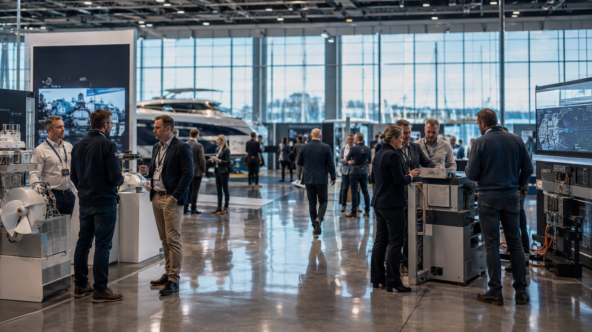
Marine Business samlar den professionella marina marknaden: varv, handel, marinor, teknik, energi, finansiering, service och kommersiella operatörer.
En renodlad mötesplats för branschen – mitt i Sveriges största marina publikevent. Matchmaking, branschmorgon, mötesbokning och fokuserade teknikspår gör det lätt att hitta rätt människor.
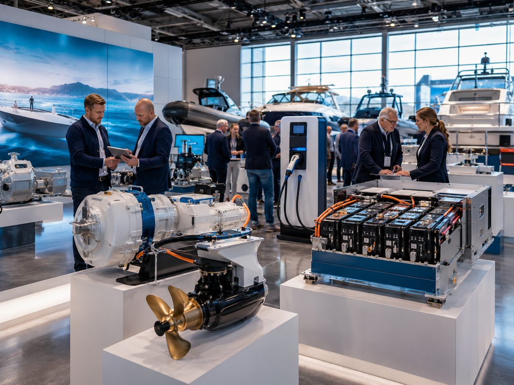
El, hybrid, batterier, laddning, motorer, drivlinor och energioptimering.
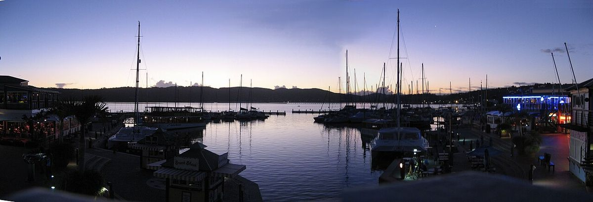
Infrastruktur, hamndrift, service, lyft, förvaring, reservdelar och eftermarknad.
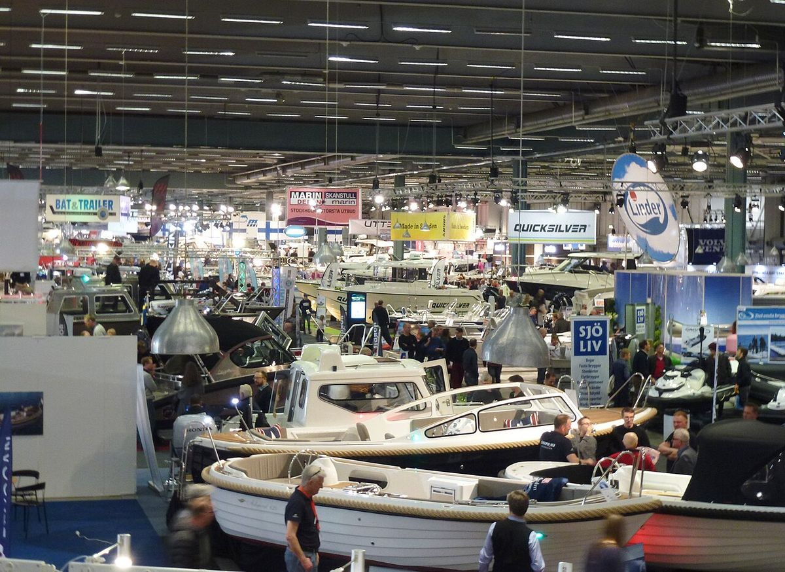
Återförsäljare, finansiering, försäkring, leasing, import, export och nya affärsmodeller.
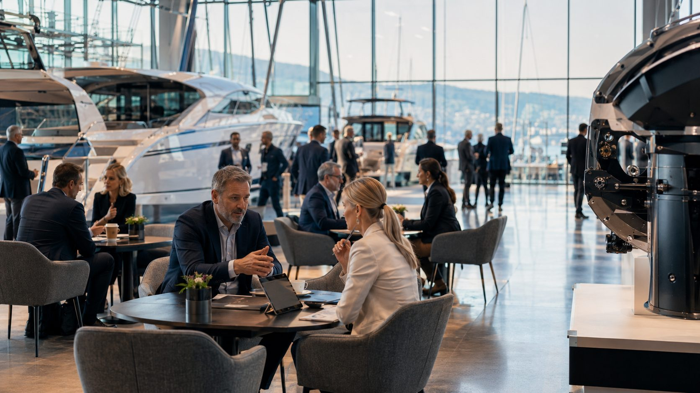
Branschfrukost. Keynotes. Förbokade 20-minutersmöten. Teknikscen. Investerarspår. Pressbriefingar. Och ostörd tillgång till mässgolvet före publiköppning.
Program, utställare och bokningsbara möten organiseras efter verkliga affärsfrågor – inte bara produktkategorier.
Elektrifiering, AI, material, navigation och hållbar teknik.
Distribution, försäljning, service och kundlivscykel.
Hamnar, varv, infrastruktur och kapacitet.
Finansiering, försäkring, investering och ägarmodeller.
Leadscanner, bokningsbara möten, kontaktdata, efterrapport och återbokningsunderlag gör Marine Business till en affärsplattform snarare än bara en monterplats.
Berätta vem du är, så hör vi av oss när biljetter, monterbokning och program öppnar.
Konceptprototyp – anmälan lagras inte ännu. Formuläret visar hur flödet kommer att kännas när bokningen öppnar.
När biljettsläpp, monterbokning och program öppnar hör vi av oss först till dig.